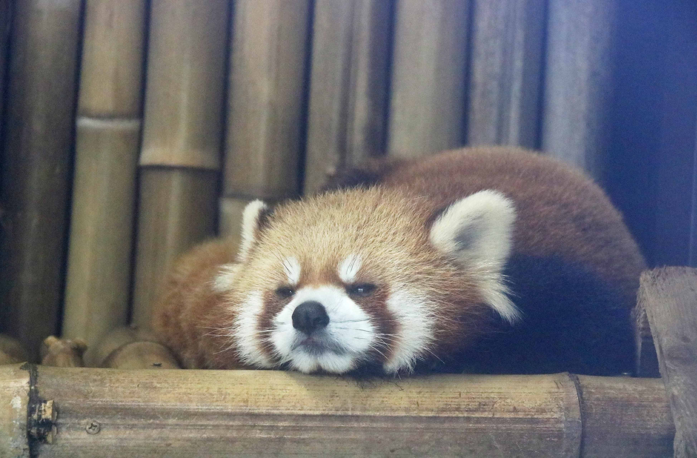

定番のお出かけスポット ― 上野
4/25 2022
カテゴリー：東京
1. 上野動物園
1882年に開園した日本最初の動物園。人気のジャイアントパンダ「シャンシャン（香香）」。観覧には事前申し込みが必要になっている。
上野動物園のレッサーパンダ。他にも約350種2500匹の動物がいる
2. アメ横
約500ｍの中に400点以上の商店が軒を連ねている
アメ横という名前は、昔は飴屋が多かったことやアメリカからの舶来品が多いことからきていると言われている
3. 東京国立博物館

創立150年。1872年にできた。収蔵品は約12万。国宝が89件、重要文化財が648件。
「総合文化展」はほぼ毎週、年間約300回、どこかの展示室で展示替えが行われます。何度来ても新しい発見がある博物館です。